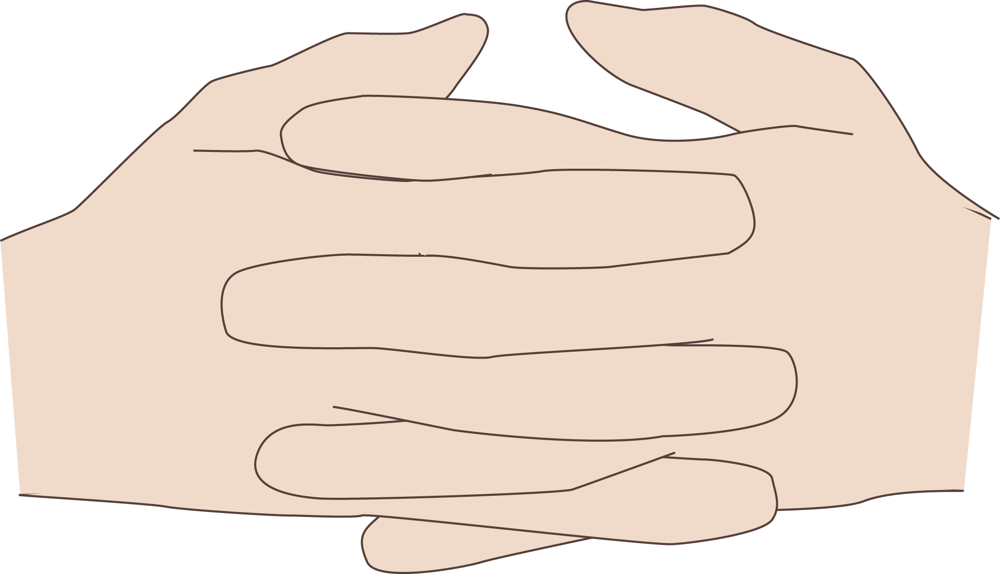

Introduction
This manual documents our methods for labeling speech-accompanying gestures. In particular, we are interested in the apparent groupedness of gesture units as described by Adam Kendon. Our focus is on features that demarcate the boundaries of what Kendon 1980 describes as Parts. To begin, we introduce some of our terminology that deviates from Kendon's terminology, in order to better specify the character of the chunks we are interested in.
- Gesture phases : These are similar to Kendon's G-phrases. We make the distinction between phases and phrases because we are using the term phrases to refer more to groups of Kendon's G-Units. Gesture phases are the pieces or components that make up a SDG.
- Stroke-defined gesture [SDG] : Like Kendon's G-Units, but we specify that each G-Unit should have a single stroke.
- Preparation phase : A moving phase that starts from a full or incomplete rest position. It precedes the stroke phase.
- Pre-stroke hold : This phase only occurs after a preparation phase. It is non-moving, a pause in gesticulation, right before theh action, or stroke phase.
- Stroke phase : This is the main action of the gesticulation unit, our SDGs. Kendon describes it as a "distinct peaking of effort" based on Rudolf Laban's definition of effort in dance theory.
- Post-stroke hold : Following right after a stroke phase, this requires that the hand or hands are not relaxed. There is intent to relax or start another gesticulation
- Relaxing phase : Similar to Kendon's recovery, relaxing phase is a motion that goes to a relaxed state.
- Relaxed phase : A state where the hands are relaxed either partially or full. Hands tend to be non-moving or having imperceptible motion
- Non-counted gestures : These are non-speech accompanying motions where the hands many be engaging in self-touch, or various twitching or swaying combinations
- Perceptual Gesture Grouping [PGG] : Similar to Kendon 1980's description of Parts which group G-Units, PGGs are groups of SDGs and are named "perceptual" due to how we labeled them (using our perception, and without sound). They may be grouped into higher orders of PGGs, with level 1, PGG1, being a grouping of SDGs, and level 2, PGG2, being a grouping of PGG1s, and so forth.
The groupedness of PGGs can be similarly described from Kendon 1980's characterization of how G-Phrases are collected into G-Units or Parts: "G-Phrase 1 and G-Phrase 2 are grouped into Part 1 because they are very similar in form and in the space they make use of. G-Phrase 3 is regarded as belonging to a separate Part, in this case because it is enacted by a different limb. In other examples where the gesticulation is confined to one limb only, distinct Parts are recognized if the limb moves to an entirely new spatial area for enactment, or if it engages in a sharply distinctive movement pattern." (Kendon 1980)
After labeling Perceptual Gesture Groupings [PGGs], we identify 3 major features, or kinematic dimensions, that when changed, aid in determining the boundaries of PGGs. These dimensions are as follows: hand shape, location with respect to the body, and trajectory shape. Hand shape and trajectory shape describe the "form" of the gesticulation, and location of the hands refer to Kendon 1980's "the space they make use of." We are not taking into account the handed-ness of the SDGs. In gesticulation, the two hands move in unison or with focus on a single dominant hand. In cases of asynchrony, the hands are still doing similar things and we have never seen in our corpus the left and right hands execute different active gesticulations that differ in these three dimensions.
One cornerstone of our research is the quantification of these dimensions. In particular, calculating the amount of change that occurs from one hand shape to the next, from one location to the next, or from one trajectory shape to the next. The more perceptually different they are, the larger the numerical difference. Currently this manual does not go into the quantification methods and procedures. We aim to provide this upon publishing our findings and promise that these methodologies remain consistent with the end goal of quantification that is more than just counting occurrences.
A second cornerstone is usability. It should be so easy people want to use it. To aid this, we have supplemented our methods with various tools and programming scripts that help align the annotations so everything lines up perfectly for quantification analysis. This methodology allows wiggle room for being a few video frames off in the annotations, which speeds up the labeling process without compromising on accuracy.
Ideally, we would like to create a sort of ultimate gesture coding guide that brings together the elements of all gesture coding methodologies, to the point where a single gesticulation will be labeled the same way (with room for uncertainty) across all future gesture publications. ToBI did that for speech and prosody, it's about time for gesture research to have it's own agreed-upon methods.
We use ELAN, a video annotation tool created by Max Planck Institute, to label our video samples. To download and learn more about how to use ELAN, check out http://tla.mpi.nl/tools/tla-tools/elan/ . We will also provide tips on using ELAN for each feature labeled. PGGs are labeled perceptually, and a novice can do it with little direction. Each gesture phase goes into its own tier and is later assembled into a single tier via scripts. Kinematic dimensions are labeled in accordance with how detailed they can be. For example, hand shape may stay the same across multiple SDGs and PGGs, so you will only have to label that segment once. Location changes frequently and may change from the beginning of a stroke phase to its end. Unless otherwise specified, all labeling is done with the audio off. This allows labelers to focus on the content of the gesturing rather than the meaning.
Terms used:
- Labeler Someone who annotates, or labels the gesture features
- Labels, annotations Annotated tokens
- Annotation value What the annotated label actually says
- Annotation range The start and end of annotation
Tips for Annotation value:
- Use a question mark at the end when unsure.
- Use forward slash "/" when unable to decide between two annotation value possibilities, with the more likely one first. This usage varies depending on the tier you're labeling.
- We labeled only the main gesturing hand for each gesture stroke (it could be either the right or left hand). Usually the other hand is relaxed or executing the same gesture movement. We've never seen two hands execute completely different gestures in natural speaking and gesturing. When this happens, the gesture phase labeling (preparation, holds, etc.) are annotated for the dominant hand in the gesture.
Tips for Workflow:
- Change ELAN preferences for how you want to save annotations after entering in the annotation value. For example, the default for Macs is "Command + Return". Changing it to just "Return" helps improve your workflow.
- Use horizontal zoom to zoom in when annotating detailed tiers like gesture strokes and location, and zoom out when annotating broad tiers like gesture phrase groupings, hand shape, and trajectory shape.
- If you have one, use a device that can assign macros or keyboard shortcuts to keys and buttons. A graphics tablet with programmable buttons has been a huge help to my workflow.
Perceptual Gesture Groupings (PGGs)
Series of gestures could be called repeated hits, beats, or shakes, with increasing speed and decreasing time separation between each stroke. The delineations between them are not always clear cut. However, it is quite simple to tell where the groupings are. Taking out the difficult decision-making process, we were able to focus on labeling the perceptual gesture groupings, and do it quickly and efficiently. With this process in place, we noticed higher level groupings of groupings!
We recommend starting off with perceptual phrase groupings. These are the easiest and fastest to label with very little training, and can provide fast insights to anyone new to gesture research.
Annotation range:
Use your perception to label gesture strokes that appear to group together. The annotation range does not have to be 100% accurate so long as the entirety of the gesture strokes are contained within the time boundaries.
Annotation value:
Leave the annotation value blank. After you are done labeling, use ELAN's "Label and Number Annotations" tool under the Tier menu option. This will give you an ID to reference later. The number of gesture strokes that are contained within each PGG is an important measure to us, and is done in post-processing of the data.
Note:
If the gesture phrase groupings appear to fall into higher level groupings, feel free to add more tiers. We normally used PGG1 for the smallest groups and PGG2 for larger groups. PGG3 occurs rarely and would depend on the speaker and duration of the video (we labeled only 13 in a 30-minute sample).
Recommendation:
Because perception of gesture grouping levels can vary from one annotator to the next, we used two annotators for each sample, with a consensus labeling round for our final annotations. Variations in labeling occur usually across levels of PGGs. Disagreements are only counted when the boundaries of the larger annotation cuts the boundaries of the smaller annotation. We look at the labeller that annotated longer PGGs (containing more strokes). Then checked whether the initial SDG of the PGG is also a initial SDG for the second labeller, and whether the last SDG of the PGG is also a last SDG of the second labeller. If this is not so, then it counts as a disagreement.
Sometimes, what is considered an SDG may be labelled by one labeller as a small movement (too slight to be counted as an SDG, but the information is still captured) by another labeller. A PGG disagreement that includes this at the beginning or end is counted as a 50% disagreement rather than a full disagreement.
Gesture Strokes and Phases
Gesture strokes are described as the peak of effort in a G-Phrase in Kendon 1980: "A phrase of gesticulation, or G-Phrase is distinguished for every phase in the excursionary movement in which the limb, or part of it, shows a distinct peaking of effort – 'effort' here used in the technical sense of Rudolf Laban (Dell 1970). Such an effort peak, or less technically, such a moment of accented movement, is termed the stroke of the G-Phrase." We interpret this to say that a gesture can include various phases, including preparation, stroke, hold, and recovery. The stroke phase is necessary for identification of the movement as a gesticulation unit. The other phases are not always used. The phases we labeled are: preparation phase, pre-stroke hold, stroke, post-stroke hold, relaxation, and relaxed. Thus we separated Kendon's proposed recovery phase into two parts: relaxation, where the hand is in motion, and relaxed, where the hand has stopped moving. This helped disambiguate some of the questions we had and provided more detail to our investigations.
The phases can also be further defined by whether there is movement. For example the movement phases are: preparation, stroke, and relaxation. The non-movement phases are: pre-stroke hold, post-stroke hold, and relaxed.
During the labeling process, each phase has its own tier. Once the phase labeling is completed, they are combined into a single tier, aptly named "all-phases." Using this tier, we are able to create the SDG tier. The all-phases tier is copied and phases around the stroke phase are consolidated into a single SDG label.
Annotation range:
It can be difficult to label the range of gesture strokes. The gesture may be too slow, too fast, or too blurry. For the case of the video being too blurry - our video framerate is at 30 frames per second, and though that is much too low for automatic motion capture, it did allow us to use the frames where the hands clear up in the frames as boundary markers for the annotation label.
Progression of blurry to clear video frames:
Annotation value:
The annotation value is created with "Label and Number Annotations" tool under the Tier menu option
Note:
If you are able to use motion tracking, use the calculated velocity and acceleration to help determine the start and end of the gesture strokes.
Hand Shape
Our hand shapes are labeled independent of its orientation. This not only helps contain the number of handshape labels, but also helps make it easier to quantify.
Annotation range:
Hand shape annotation range usually spans multiple gesture strokes based on the speakers we have seen.
Annotation value:
The value is usually a single capital letter abbreviated from the word that would best describe the hand shape. For example, we use "F" for "fist," "O" for "Open," and "R" for "Relaxed." For uncertainties between two hand shapes, we used 5-point spectrum. We use both hand shape abbreviations with a number from 1-5 in between. For example: C4O. The first letter indicates that it is a cupped shape that the labeler initially saw, the number indicates how close this shape is to the second handshape, Open. C4O means it more like Open than Cup. It is equivalent to O2C. So, the order does not matter.
Check the library of hand shapes at the end of this manual. It contains images of the different hand shapes as a reference.
Note:
We do not annotate hand shapes for regions where there are no strokes. Occasionally there may be a single gesture stroke that has a hand shape distinct from its neighbors. When both hands have different hand shapes, and the non-gesturing hand's hand shape changes, the annotation value would only refer to the gesturing hand. It is okay to specify RH for right-hand or LH for LH.
Recommendation:
These hand shapes will vary a bit across different speakers. One speaker's default "Cup" handshape may be more rounded than another speaker's "Cup" handshape. As we're not doing a inter-speaker comparison, we use the default labels. If you are doing a inter-speaker comparison of handshapes, we recommend going through the video and take screenshots of the different handshapes used, and proceed from there.
Location
Location refers to where the hands are in respect to the body.

Annotation range:
Every gesture stroke has a start location and an end location even if they are the same. Sets of small gestures may stay in the have the same location for the duration of the set. For large gestures that cover more space, also label the extremes in between the start and end locations.
Annotation value:
Use the mapping grid to for the values to use. Location is annotated as (right_hand_y),(right_hand_x);(left_hand_y),(left_hand_x). The y-values can have half values. For example, "3.5" would refer to the middle of the torso. Annotating the right hand first makes the labeling process faster.
Note:
If you are able to obtain tracked data of where the hands are for your video sample, do the location labeling anyways. Location labeling may be automated by using the tracked data and a script to chunk the ranges based on the grid above. Be sure that your tracked data is adjusted for the speaker's torso movements.
Slight movements that are visible may not be captured as having a location change because the trajectory motion does not travel far enough to qualify as a substantial change.
Trajectory Shape
Trajectory shape describes the path shape of the gesture stroke. It can be moving in a straight path, curved path, or a looping path.
Annotation range:
The range of these annotations tend to encompass multiple strokes, but also sometimes applies to only one gesture stroke.
Annotation value:
Use these labels:
| Abbr | Description |
|---|---|
| S | Straight |
| C | Curved |
| L | Looping |
| S-horiz | Straight, horizontal |
| S-diag | Straight, diagonal |
Note:
Looping strokes and consecutive curved strokes can be hard to tell apart. While there is a pause between curved strokes, there is no pause between looping strokes. Meaning, for the strokes in the middle, they have no other phases than the stroke phase. The first stroke in the set may not have any post-stroke phases, and the last stroke in the set may not have any pre-stroke phases.
Hand Shape Library
Handshapes are quantified by 3 measures: curl, finger spread, and intention. Curl describes how much the fingers are curled in, with 5 being most curled in a fist shape, and 1 being least curled in the Open shape. Spread refers to the distance between fingers, or how far they are from each other. Open has the most spread at 5, and Knife has no spread at 1. Intention describes a qualitative intent behind the hand shape. Q, or "Okay" handshape has intent at 5, and Relaxed has an intent at 1. Each handshape has a unique set of numbers for Curl, Spread, and Intent. This allows them to be quantified for later analysis.
| Name | Abbr | Description | Image |
|---|---|---|---|
| Deictic | D | index finger pointing | |
| Gun | G | index finger and thumb out | |
| Fist | F | all fingers curled in | |
| Relaxed | R | all fingers loose with no intention | |
| Open | O | all fingers spread outward |  |
| Cup | C | all fingers curled midway, claw-like, high intention | |
| Knife | K | fingers straight and flat |  |
| Angled | A | like, knife, bent | |
| Pursed | P | fingers pointed together | |
| Hole | H | fingers curved in, forming cylinder shape | |
| Okay | Q | iconic OK shape | |
| Two | T | index and middle finger pointed out | |
| Loose | L | relaxed shape with fingers curled in | |
| Steepled | S | two open hands, fingertips touching | |
| Wall | W | two open hand forming a wall or barrier | |
| Jailed | J | two hands forming a barrier with fingers not pressed against each other | |
| Intertwined | I | two cup hands clasped, with fingers intertwined |  |
Contact
Ada Ren at ada.inspired(at)gmail(dot)com